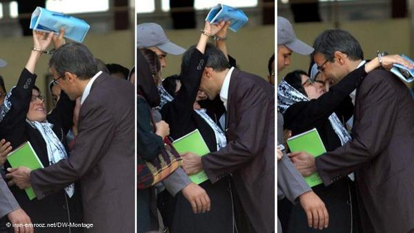
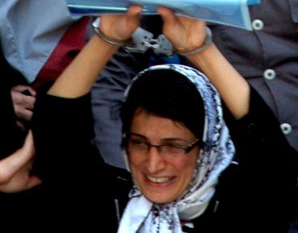

|
|
احضار نسرین ستوده، وکیل زندانی، برای محاکمه دوباره در پرونده ای جدید
يكشنبه24 اردیبهشت 1391
کلمه: رضا خندان همسر نسرین ستوده از دریافت احضاریه ای در زندان توسط همسرش خبر می دهد که بر اساس آن یکشنبه ۳۱ اردیبهشت ساعت ۱۱ صبح باید در شعبه ی یک دادگاه انتظامی وکلا حاضر شود.
همسر این وکیل دربند در زندان اوین در گفتگو با کلمه تصریح می کند که این دادگاه در ادامه ی محاکمه ای است که از حدود یک سال پیش بنا به درخواست مرجع قضایی مبنی بر تعلیق پروانه وکالت اش، آغاز شده است.

سال گذشته اوایل خرداد بود که عکس دستبند زده شده ی نسرین ستوده بر گردن همسرش مقابل دادگاه انقلاب موجی از احساس خشم از این حد از ستم و تحسین از این حجم از مقاومت را در هر بیننده ای برانگیخت، تصویری که در این یک سال تبدیل به نماد مقاومت مادری شده است که ۲۱ ماه است به جرم پافشاری در دفاع از موکلانش محبوس است. نیمای سه ساله ی آن روزها دیگر برای مدرسه رفتن آماده می شود و مهراوه ی ۱۲ ساله نقش مادری را خوب برای پدر و برادر بازی می کند.
آن روزها خبر آمد که بعضی مقام های قضایی خواهان ابطال پروانه وکالت نسرین ستوده هستند که کانون وکلای دادگستری با ورود به این پرونده اعلام کرده است که با تشکیل دادگاهی درباره این موضوع تصمیم خواهد گرفت.
این دادگاه به ریاست بتول کیهانی، عضو هیات مدیره کانون وکلای دادگستری، و با حضور چند عضو دیگر این کانون برگزار شد اما در نهایت تصمیم در این باره به جلسه دیگری موکول شد. جلسه ی دیگری که بعد از یک سال مشخص شد.
نسرین ستوده سال گذشته همین روزها در نامه ای به نیمای سه ساله اش نوشته بود: “چگونه برایت توضیح دهم که آمدنم به خانه دست خودم نیست تا به سویت پر بکشم، تو که به پدرت گفته بودی به مامان بگو کارش را تمام کند و به خانه برگردد. چگونه برایت بگویم که هیچ «کاری» نمیتواند مرا از تو این همه دور کند، در واقع هیچ «کاری» حق ندارد مرا این همه از تو دور کند. هیچ «کاری» حق ندارد اینقدر حقوق کودکانم را نادیده بگیرد که طی ۶ ماه بازداشت به من یک ساعت ملاقات با تو را بدهد. با تو چه بگویم که هفتهی گذشته از من پرسیدی مامان با ما به خانه می آیی؟ و من در مقابل چشم ماموران بازداشتگاه به تو گفتم: «کارم طول می کشد و دیرتر می آیم». آن وقت تو با سر تکان دادنت گفتی باشد و دستم را کشیدی و با لبهای کوچکات بوسهای کودکانه بر دست هایم زدی…

در طول ۶ ماه گذشته دو بار به شدت گریستم. بار اول در سوگ پدرم بود که از عزاداری و سوگواری نیز محروم بودم و بار دوم همان روز بود که نتوانستم با تو به خانه برگردم و وقتی به سلولم برگشتم بی اختیار بلند بلند گریستم.”
نسرین ستوده از ۱۳ شهریور ۱۳۸۹ در بازداشت است و در دادگاه به جرم “اقدام علیه امنیت ملی، تبانی و تبلیغ علیه نظام و عضویت در کانون مدافعان حقوق بشر” به تحمل ۱۱ سال حبس تعزیری، ۲۰ سال محرومیت از وکالت و ۲۰ سال ممنوعیت خروج از کشور و به جرم تظاهر به بی حجابی به ۵۰ هزار تومان جریمه نقدی محکوم شده است.
گفتگوی رضا خندان همسر این وکیل دادگستری و عو کانون مدافعان حقوق بشر که نزدیک به دو سال است در بند زنان زندان اوین محبوس است را با هم می خوانیم:
آقای خندان ماجرای احضاریه ی جدید برای نسرین ستوده چیست؟
خبردار شدیم که نسرین در زندان احضاریه دریافت کرده است که بر اساس آن یکشنبه ۳۱ اردیبهشت ساعت ۱۱ صبح باید در شعبه ی یک دادگاه انتظامی وکلا حاضر شود.
شما از دلیل این احضاریه ی جدید هم خبر دارید؟
بله در واقع این دادگاه در ادامه ی دادگاهی است که از حدود یک سال پیش شروع شده بود و سال گذشته هفتم یا هشتم خردادماه هم اولین و آخرین جلسه ای بود که تشکیل شده بود و بنا به دلایلی در آن شعبه تشکیل نشد و قرار شد وقت بعدی تعیین شود، ولی عملا مدت ها طول کشید. که البته ظاهرا احضاریه را دادگاه فرستاده بود اما برای ما نیاورده بودند و به خود همسرم هم در این ابلاغ نکرده بودند.
طی چند روزگذشته در زندان برای ایشان احضاریه ای فرستادند که آخر ماه برای محاکمه باید به دادگاه انتظامی کانون وکلا مراجعه کند که البته باید مسئولین آنجا ببرندشان .
این محاکمه برای این است که مرجع قضایی از کانون انتظامی وکلا درخواست کرده که پروانه وکالت نسرین ستوده را به دلیل پرونده ای که در دادگاه انقلاب تشکیل و در آن محکوم شده است به حالت تعلیق دربیاورند و یا ابطال کنند و همچنان این موضوع ادامه دارد تا حال که الان اعلام کردند که باید ۳۱ اردیبهشت در دادگاه حضور پیدا کند.
نظر خود خانم ستوده درباره ی این دادگاه و فلسفه ی تشکیل آن چیست؟
همسر من به هیچ وجه نه در این پرونده که اصلا موضوعیت ندارد که حتی در پرونده ای که حکم برای آن صادر شده حکم صادره را عادلانه نمی داند، در واقع ایشان اصلا بازداشت خودش را عادلانه نمی داند. او هیچ خلافی نکرده و هیچ جرمی مرتکب نشده است. کسی را برای چهار تا مصاحبه ۵۱ سال حکم نمی دهند.
خانم من در حکم اولیه ش 15 سال حکم داشت ۲۰ سال محرومیت از وکالت، ۲۰ سال ممنوعیت از خروج از کشور و یازده سال هم حبس تعزیری. همسر من خودش را مجرم نمی داند و چون معتقد است حکم غیر عادلانه است حق خودش می داند که بتواند به وکالتش در هر حالت ادامه دهد.
پس در جلسه ی دادگاه حاضر می شوند.
در جلسه ی دادگاه حاضر خواهد شد اما مشکلی که وجود دارد این است که وکیل ایشان در این پرونده جناب آقای سلطانی هستند که خودشان در این مدت بازداشت شده اند و ما باید در این فرصت کوتاه دنبال وکیل دیگری باشیم و تمام مراحل قانونی را طی کنیم.
فکر می کنید بعد از این دادگاه بتوانند بالاخره به مرخصی بیایند؟
خیلی مرخصی دادن به همسر من به این پرونده ارتباطی ندارد و اساسا ممکن است که نتیجه ی قطعی هم در این جلسه گرفته نشود. در نتیجه نه من هیچ ارتباطی نمی بینم بین تشکیل این دادگاه و مرخصی ایشان.
وضعیت روحی خانم ستوده بعد از نزدیک به دوسال چطور است؟
والا به لحاظ روحی وضع خوبی دارد. اما شما تصور کنید یک مادر ناغافل و ناگهانی ۲۱ ماه ارتباطش از خانواده و بچه ها و دنیا و همه چیز یکهو قطع شود. بخصوص بچه های کوچک که خود شما بهتر از هر کسی درک می کنید برای هر کس چقدر سخت و غیر قابل تحمل و خرد کننده است. اما با این وجود او همچنان روحیه ی خوبی دارد.
امروز روز مادر بود، از حال و هوای فرزندانتان در این روز و در این جدایی بگویید.
از این قسمت خیلی نپرسید که قاعدتا حرف خوشحال کننده ای برای شما ندارم. من از این فرصت فقط میتوانم استفاده کنم و به شما و همه زنان و مادران تبریک بگویم.
خب ما در چنین مناسبت هایی سعی می کنیم حال و هوای این روزها در خانواده و فضای خودمان خیلی پررنگ نشود که بچه ها اذیت نشوند و دلتنگی هایشان پررنگ تر نشود. البته همسر من در روزهایی مثل روز جهانی زن همیشه برنامه هایی داشت و سخنرانی و سفر و این ها و خیلی هم در خانه نبود اما الان توصیه اش به ما سفر رفتن و فاصله گرفتن از جو این روزهاست که بچه ها کمتر اذیت شوند. به هر حال ما که همیشه به یادش هستیم، چنین روزهایی بیشتر به یادش هستیم.
امیدوارم نه تنها همسر من بلکه همه ی زنان و مردانی که به ناحق بازداشت شده و در حبس و در شرایطی آن چنانی هستند، رهایی پیدا کنند و همه دوباره طعم آزادی را بچشند.